Modern Development experience with Liberty and Java applications
Lab: Using Open Liberty Tools with VS Code
Objectives
In this exercise, you will learn how developers can use Liberty in “dev” mode with VS Code Integrated Development Environment for achieving efficient iterative develop, test, debug cycle when developing Java based applications and microservices.
At the end of this lab you should be able to:
-
Experience using the Open Liberty Tools extension available in VS Code to efficiently develop, test, and debug Java cloud native applications.
-
Experience hot reloading of application code and configuration changes using dev mode
You will need an estimated 60 to 90 minutes to complete this lab.
Lab requirements
- Use the lab environment that we prepared for this lab. It already has the prerequisite software installed and configured.
Introduction – Open Liberty Tools extension for VS Code
In a separate lab, you learned how Open Liberty dev mode can be run from a command line while allowing you to edit your code with any text editor or IDE.

In this lab, you will use the “Open Liberty Tools” VS Code extension to start Open Liberty in development mode, make changes to your application while the server is up, run tests and view results, and even debug the application without leaving the editor.
Your code is automatically compiled and deployed to your running server, making it easy to iterate on your changes.
The Open Liberty Tools for VS Code contains the following key Features
-
View liberty-maven-plugin projects in the workspace (version 3.1 or higher)
-
View liberty-gradle-plugin projects in the workspace (version 3.0 or higher)
-
Start/Stop Open Liberty Server in dev mode
-
Start Open Liberty Server dev mode with custom parameters
-
Run Unit and Integration tests
-
View unit and integration test reports
The Open Liberty Tools for VS Code has a dependency on the Tools for MicroProfile VS Code extension to support the development of MicroProfile based microservices.
The Tools for MicroProfile VS Code extension has dependencies on the following:
-
Java JDK (or JRE) 11 or more recent
-
Language Support for Java by Red Hat VS Code extension.
Liberty Maven Plugin
The Liberty Maven Plugin provides several goals for managing a Liberty server and applications.
Maven 3.5.0 or later is recommended to use the Liberty Maven Plugin.
Enabling the Liberty Maven Plugin in your project, simply add the following XML Stanza to your pom.xml file.

For detailed infromation about the Maven goals supported by the Liberty Maven Plugin, visit:
https://github.com/OpenLiberty/ci.maven
Interacting with dev mode
Once the Liberty Maven Plugin is specified in your pom.xml file, your project name is then listed under the Liberty Dev Dashboard in the side panel in VS Code, as illustrated below.
You can interact with dev mode by right-clicking on your project name and selecting one of the commands supported by the Open Liberty Tools extension.
Liberty dev mode Commands
The following commands can be selected from the drop-down menu after right-clicking on your project name in the Liberty Dev Dashboard.

The lab environment
One (1) Linux VM has been provided for this lab.
The “Liberty vPOT … Desktop” VM has the following software available:
-
Application Project with Liberty
-
Maven 3.6.0
The login credentials for the Liberty vPOT … Desktop” VM are:
User ID: **ibmdemo**
Password: **passw0rd (That is a numeric zero in passw0rd)**
 |
IMPORTANT: Using the lab environment provided, all the required VS code extensions and dependencies have been installed for you. This allows you to focus on the value of using the capabilities of the tools for fast, efficient inner-loop development, test, debug, of Java based applications and Microservices using Open Liberty in dev mode. |
Login to the "Liberty vPOT … Desktop" VM and Get Started
-
If the VM is not already started, start it by clicking the Play button.

-
After the VM is started, click the “Liberty vPOT … Desktop” VM icon to access it.
-
Login with ibmdemo ID.
a. Click on the “ibmdemo” icon on the Ubuntu screen.

b. When prompted for the password for “ibmdemo” user, enter “passw0rd” as the password:
Password: passw0rd (lowercase with a zero instead of the o)

-
Resize the Skytap environment window for a larger viewing area while doing the lab.
From the Skytap menu bar, click on the “Fit to Size”
 icon. This will enlarge the
viewing area to fit the size of your browser window.
icon. This will enlarge the
viewing area to fit the size of your browser window.
If, at aytime during the lab, you ar asked to install updates, click CANCEL!
|
Important: Click CANCEL…. If, at any time during the lab, you get a pop-up asking to install updated software onto the Ubuntu VM. The one we experience is an update available for VS Code. CLICK CANCEL! |

Getting Started with Open Liberty Tools in VS Code
Liberty Dev mode allows you, as the developer, to focus on your code. When Open Liberty is running in dev mode, your code is automatically compiled and deployed to the running server, making it easy to iterate on your changes.
In this lab, as a developer, you will experience using the Open Liberty Tools extension in VS Code to work with your code, run tests on demand, so that you can get immediate feedback on your changes.
You will also work with integrated debugging tools and attach a Java debugger to debug your running application.
From a developer perspective, this is a huge gain in efficiency, as all these iterative inner-loop development activities occur without ever leaving the integrated development environment (IDE).
Review the VS Code extensions and projects pom.xm file used for this project
The sample application used in this lab is configured to be built with Maven. Every Maven-configured project contains a pom.xml file, which defines the project configuration, dependencies, plug-ins, and so on.
Your pom.xml file is in the root directory of the project and is configured to include the liberty-maven-plugin, which allows you to install applications into Open Liberty and manage the server instances.
To begin, navigate to the project directory and review the IDE extensions and pom.xml file that is used for the “system” microservice that is provided in the lab.
First, add the project folder to a VS Code Workspace
-
Close all Terminal windows and Brower Tabs used in any previous lab.
-
Navigate to the project directory and launch VS Code from the start” folder of the project.
a. Open a terminal window and change to the following directory:
cd /home/ibmdemo/Student/labs/devmode/guide-getting-started/start -
Launch VS Code using the current directory as the root folder for the workspace
code .When the VS Code UI launches, the Explorer view is shown. The “START” folder contains the source code for the project.
-
Review the installed extensions in VS Code that are used for this lab.
a. Click on the Extensions icon in the left navigation bar in VS Code.
b. Expand the “INSTALLED” extensions section to list the extensions that are currently installed in this environment. The notable extensions used in this lab are:
- Open Liberty Tools
- Tools for MicroProfile
- Language Support for Java
- Debugger for Java
c. Click on the “open Liberty Tools” extension to view its details.
d. Notice the list of commands that are supported by the Open Liberty Tools extension.
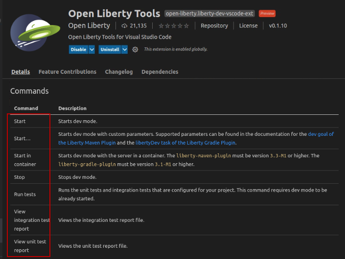
e. Scroll down to the “Requirements” section of the Open Liberty Tools details page.
Notice the requirement for “Tools for MicroProfile” to support development of Microservices that use MicroProfile APIs with Open Liberty.
Information:
The Tools for MicroProfile extension requires the components to be installed in the environment:

f. Close the Open Liberty Tools Extension details page.
-
Review the pom.xml file used to configure and build the "system” microservice.
a. Click on the Explorer icon located on the left navigation bar in VS Code.
b. Expand the START folder if it is not already expanded
c. Click on the pom.xml file to open it in the editor pane
d. Close any Pop-up boxes asking if you want to install extensions or switch views.
Note: You may see additional pop-ups, just close them, or ignore them.

e. Note the binary packaging of the Java application war file that is produced from the Maven Build. The WAR file produced will be named guide-getting-started version 1.0-SNAPSHOT.

f. Default HTTP and HTTPS Ports are defined, and substituted into the server.xml file

g. The Open Liberty Tools Plugin is enabled, with a supported version of 3.3.4

h. Plugin for running Tests is also added to the Maven configuration, that leverage the testing dependencies also defined in the pom.xml file.
i. Close the pom.xml file
Information:
Tip: Additional information on the liberty-maven-plugin can be found here:
Using Open Liberty Tools in VS Code
In this section of the lab, you will use the Open Liberty Tools in VS Code to work with your code and run tests on demand, so that you can get immediate feedback on your changes.
|
Important: For Open Liberty Tools (LIBERTY DEV DASHBOARD) VS Code provides extensions for Java to support the Java language features. VS Code for Java supports two modes.
VS Code has a default configuration called “hybrid mode” where a workspace is opened in Lightweight mode, but as needed, you are prompted to switch to Standard mode. The Tools for MicroProfile Extension, which is required for the Open Liberty Tools extension, requires the Java workspace to be opened in “STANDARD” mode. Otherwise the LIBERTY DEV DASHBOARD will not function properly. Tip: In this lab environment, the workspace is already configured to use Standard mode. For more details on VS Code for Java is available here: https://code.visualstudio.com/docs/java/java-project |
-
Use the Liberty Dev Dashboard to start the Liberty Server in dev mode
a. In VS Code, expand the LIBERTY DEV DASHBOARD section
b. Right-mouse click on the guide-getting-started Liberty Server
c. Select Start from the menu to start the server
d. The Terminal view opens, and you see the server log messages as the server starts. When the following message spear in the Terminal, the Liberty server is started.

-
Run the system Properties sample application from a web browser
a. Open the Firefox Browser from inside of the VM
b. Go to http://localhost:9080 to verify the application is running.
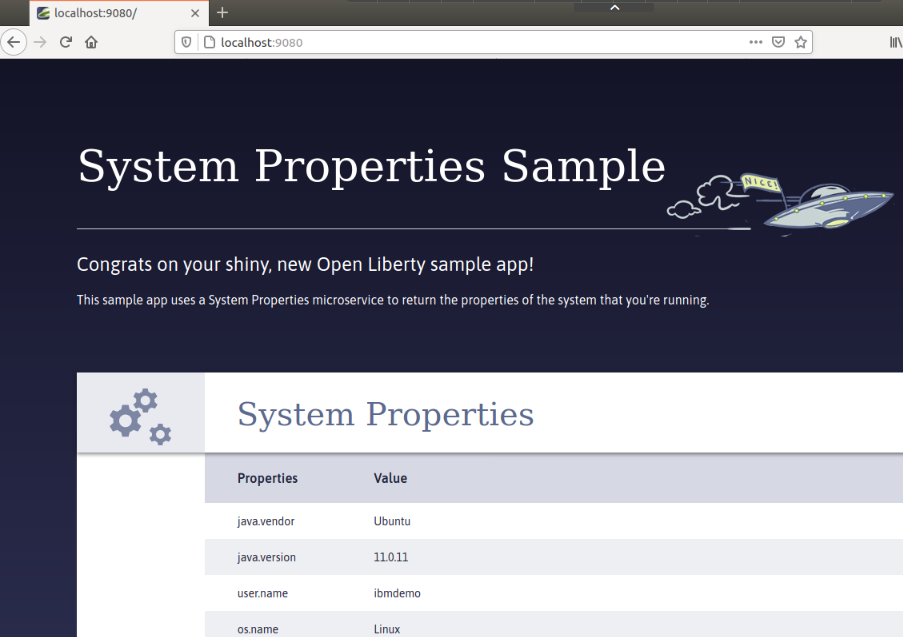
Developer experience Using Open Liberty Tools in VS Code
The System Properties Sample application is up and running in the Liberty server.
Next, as a developer, you want to implement a health check for the application.
The developer experience is frictionless, as all code and configuration change the developer introduces, are automatically detected and the server and application are dynamically updated in the running server to reflect the updated code and configuration.
Let’s explore a couple of examples of the very efficient developer experience by implementing some new capability into our service.
In this example, you will leverage the mpHealth-2.2 feature in Open Liberty, which implements the MicroProfile mpHealth-2.2 API, to implement the new health checks for the application.
The mpHealth-2.2 feature provides a /health endpoint that represents a binary status, either UP or DOWN, of the microservices that are installed.
To learn more about the MicroProfile mpHealth feature, visit: https://www.openliberty.io/docs/21.0.0.4/health-check-microservices.html
-
Update the Liberty server configuration file (server.xml) to include the mpHealth-2.2 feature to begin implementing the health checks for the application.
a. In the VS Code Explorer view, navigate to START -> src -> main -> liberty / config
b. Click on server.xml to open the file in the editor pane

c. Add the mpHealth-2.2 feature to the server.xml file using the text below:
<feature\>mpHealth-2.2\</feature\>d. Save and Close the server.xml file
When the server.xml file is saved, the configuration changes are detected, and the server is dynamically updated, installing the new feature and updating the application in the running server.
-
View the messages in the Terminal view, showing the feature being installed and the application being updated.
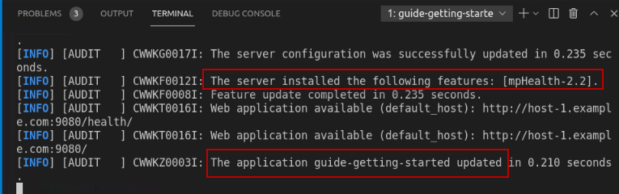
Once the changes are saved, and the server is automatically updated, the new /health endpoint is available.
-
From the Firefox browser in the VM access the /health endpoint to view the health status of the application.
**http://localhost:9080/health**
Currently, the basic health check provides a simple status indicating if the service is running, but not if it is healthy.
In the next steps, you will implement a liveness check that implements logic that gathers memory and cpu usage information and reports the service DOWN in the health check if the system resources exceed a certain threshold.
You will also implement a readiness check that checks external property configuration in the server.xml file, that is used to place the service in maintenance mode. And if the service is in maintenance mode, the service is marked DOWN from the health check.
-
Copy an implementation of the SystemReadinessCheck.java to the project
a. Open a Terminal window on the VM
b. Run the following command to copy the SystemReadinessCheck.java to the project
cp /home/ibmdemo/Student/labs/devmode/guide-getting-started/finish/src/main/java/io/openliberty/sample/system/SystemReadinessCheck.java /home/ibmdemo/Student/labs/devmode/guide-getting-started/start/src/main/java/io/openliberty/sample/system/SystemReadinessCheck.java< Information:
For the purposes of the lab, the copy command above copies a fully implemented Readiness check from the “finished” project, into the current working project.
-
Review the SystemReadinessCheck.java implementation
a. Return to the VS Code Explorer view
b. Navigate to START > main > java / io / openliberty / sample / system
c. Click on the SystemReadinessCheck.java file to open it in the editor pane

The SystemReadinessCheck simply evaluates the “inMaintenance” ConfigProperty, which is implemented via the mpConfig MicroProfile feature, and configured in the Liberty Server’s server.xml file.
-
If the “inMaintenance” property is set to “false” the readiness check sets the Health Status to UP.
-
If the inMaintenance property is set to “true” the status is set to DOWN.
-
-
From the Firefox Browser in the VM, rerun the /health endpoint to view the health status of the application.
http://localhost:9080/healthInformation:
Did you notice that while implementing the new readiness check code in the application, that you did not have to restart the application or Liberty Server?
The Open Liberty Tools detected the code changes in the project, and dynamically updated the application in the running server.
-
Copy an implementation of the SystemLivenessCheck.java to the project
a Open a Terminal window on the VM
b. Run the following command to copy the SystemLivenessCheck.java to the project
cp /home/ibmdemo/Student/labs/devmode/guide-getting-started/finish/src/main/java/io/openliberty/sample/system/SystemLivenessCheck.java /home/ibmdemo/Student/labs/devmode/guide-getting-started/start/src/main/java/io/openliberty/sample/system/SystemLivenessCheck.javaInformation:
For the purposes of the lab, the copy command above copies a fully implemented Liveness check from the “finished” project, into the current working project.
-
Review the SystemLivenessCheck.java implementation
a. Return to the VS Code Explorer view
b. Navigate to START -> main -> java / io / openliberty / sample / system
c. Click on the SystemLivenessCheck.java file to open it in the editor pane

The SystemLivenessCheck evaluates the “memory” and “cpu” resources used.
-
If the “memory” used is less than 90%, the liveness probe sets the status to UP.
-
If the “memory” used is greater than 90%, the liveness probe sets the status to DOWN.
-
-
From the Firefox Browser in the VM, rerun the /health endpoint to view the health status of the application.
http://localhost:9080/health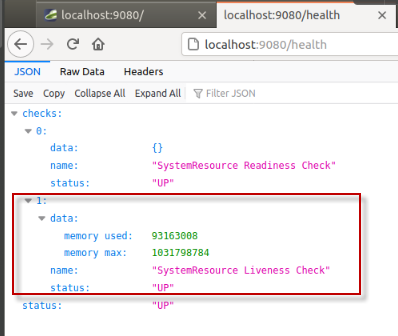
Note: in the case where there are multiple health checks being performed, as in our example, ALL the health checks must have the UP status for the service to be marked UP.
So, what happens when we change the inMaintenance property to“true”?
Let’s modify the external configuration to set the service in maintenance mode and see the results of the health checks.
-
Modify the inMaintenance property in the server.xml file
a. Return to the VS Code console and navigate to START -> src -> main -> liberty / config
b. Click on server.xml to open the file in the editor
c. Modify the inMaintenance variable value to “true” as illustrated below
d. Save the server.xml file. The server configuration is dynamically updated to reflect the update.
-
From the Firefox Browser in the VM, rerun the /health endpoint to view the health status of the application.
http://localhost:9080/health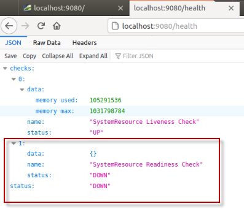
-
In the server.xml file, change the inMaintenance variable back to false”
a. Save the server.xml file
b. Close the server.xml editor view

-
Rerun the /health endpoint to verify the service is now marked UP again.
Running Tests using the Open Liberty Tools in VS Code
In this section of the lab, you will make some simple changes to the sample application code and run test cases directly from the VS Code IDE using the built-in capabilities in the Open Liberty tools.
To simulate a breaking change in the application code, you will modify the path to the service endpoint from /properties to /all-properties.
Because the test case attempts to run the system service using the /properties path, the test case will fail and return an HTTP Code of 404, rather than the expected response code of 200.
Since the developer is purposely introducing this change, the test case needs to be updated to reflect the new path to the service for the tests to pass.
-
Use the Liberty Dev Dashboard to Run Tests against the System Properties Sample service.
a. In VS Code, expand the LIBERTY DEV DASHBOARD section
b. Right-mouse click on the guide-getting-started Liberty Server
c. Select Run Test from the menu to run the tests
d. In the Terminal view, you will see the results of the tests. One test was executed, and one test PASSED.

Next, as a developer on the project, you have been asked to change the code to specify a different path to the “properties” service. Doing so, has an impact on the tests. In the next few steps, you will make the code change, and update the tests to match the NEW expected results.
-
Open the sytemResources.java in VS Code editor
a. In VS Code Explorer view, expand START -> src -> main -> java / io / openliberty / sample / system
b. Click on SystemResources.java to open it in the editor

-
Update the @Path to the system properties service to specify a different service path
a. From the editor, make the following change to the systemResources.java file:
Change the highlighted line:

Updated to read: @Path("/all-properties")

b. SAVE the file. The Liberty server and application are dynamically updated.
c. Close the editor view for the SystemResource.java file
-
From the Firefox browser, run the service using the NEW endpoint URL
http://localhost:9080/system/all-properties
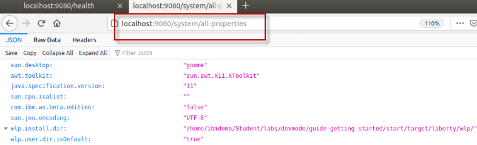
-
Use the Liberty Dev Dashboard to Run Tests against the System Properties Sample service.
a. In VS Code, expand the LIBERTY DEV DASHBOARD section
b. Right-mouse click on the guide-getting-started Liberty Server
c. Select Run Test from the menu to start the server
d. Alternatively, you can run the tests by simply pressing the ENTER key in the Terminal window. Give it a try. The tests now FAIL.
-
Use the Liberty Dev Dashboard to View integration test report.
a. In VS Code, expand the LIBERTY DEV DASHBOARD section
b. Right-mouse click on the guide-getting-started Liberty Server
c. Select View integration test report from the menu
-
View the test results details in the “guide-getting-started Failsafe report” that is now displayed the editor pane
a. Notice that the test case failed
b. Scroll to the bottom of the report to see the ERROR message that was produced from the failing test.
c. The issue is obvious. Since we changed the endpoint path, the test case assertion failed because it got a HTTP response code of 404 (Not Found) when attempting to run the service using the original path of /properties.
d. Close the Failsafe Report in the Editor pane
NOTE: In this case, we expected the test case to fail. And as the developer, you must update the test case to match the expected results based on to your code change.
-
Modify the test case that is included in the application project> to invoke the updated path to the service.
a. From the Explorer view in VS Code, navigate to START -> src -> test / java / it /io /openliberty / sample
b. Click on PropertiesEndpointIT.java to open it in an editor pane
c. From the editor, make the following change to the PropertiesEndpointIT.java file:
Change the highlighted line: “system/properties”
Updated to read: “system/all-properties”

d. SAVE and CLOSE the file. The Liberty server and application are dynamically updated.
-
Rerun the tests by Pressing the ENTER key in the Terminal view. The test PASS.
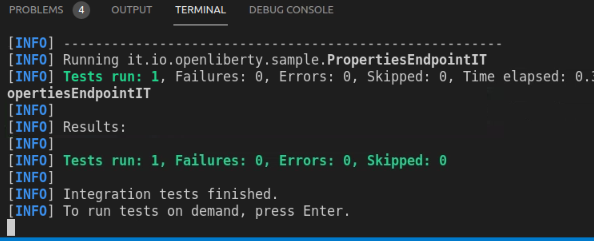
At this point, you have explored using the Liberty Developer Tools to develop code, make server configuration changes, and run test cases to get immediate feedback on the updates.
Using the Open Liberty Tools in VS Code provides an integrated development environment where your updates were automatically detected and dynamically applied to the running server. This provides a rapid inner-loop development cycle for development and testing.
In the next section of the lab, you will explore how simple it is to integrate application debugging in the same development environment without having to restart the Liberty server.
OPTIONAL: Integrated debugging using the Open Liberty Tools in VS Code
Application debugging is an important part of application development. Developers expect to easily and quickly iterate through dev – test – debug without having to leave the development environment or having to restart servers and applications for debugging.
In this section of the lab, you will explore how easy it is for developers to debug their Java application using the integrated development environment and Open Liberty.
Here are the basics steps for debugging
-
Set a breakpoint in the source code
-
Add a “Java Attach” in the launch configuration and set the debug port
-
Go to Debug view and select the “Attach” configuration
-
Click the Start debugging icon
-
Run the application in the Browser
-
The application stops at the breakpoint
-
Step through the app in debug mode to explore the variables and code to resolve issues
One of the key features of Visual Studio Code is its great debugging support.
In this section of the lab, you will use VS Code debigger to debug the Java application running on Liberty server.
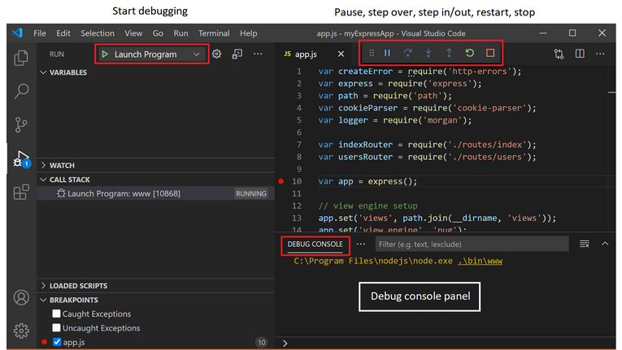
In this scenario, you will set a breakpoint and debug the SystemLivenessCheck.java code that is executed when running the /health endpoint in the application.
-
Open the SystemLivenessCheck.java in VS Code editor
a. In VS Code Explorer view, expand START -> src -> main -> java / io / openliberty / sample / system
b. Click on SystemLivenessCheck.java to open it in the editor

-
Set a breakpoint in the code where the MemoryMaxBean variable is set
a. Locate the line with the text:
MemoryMXBean memBean = ManagementFactory.getMemoryMXBean();
b. Left-mouse click on the left side of the Line Number (31 in the screen shot) to set a breakpoint. A red dot will appear, indicating the breakpoint is set
-
Create a new Java Attach configuration and specify the debug port 7777
a. Select Run > Add Configuration… from the main menu in VS Code

A new file named launch.json file was created in the .vscode directory. You can see the new file in the explorer view.
b. In the launch.json file that opened in the Editor view, click on the “Add Configuration” button located on the lower right corner of the screen.

c. Select Java: Attach from the menu.

d. A new configuration is added to the launch.json file, that includes a “port” parameter to attach the debugger for Open Liberty.
Note: Open Liberty is configured to use debug port 7777 by default.

-
Change the “port” parameter to 7777
a. From the editor, make the following change to the lauch.json file:
Change the highlighted line: "port": "
" 
Updated to read: “port”: 7777
Note” Be sure to REMOVE the double quotes around 7777, as illustrated below.
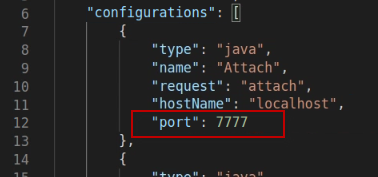
b. SAVE and CLOSE the file. The Liberty server and application are dynamically updated.
-
Now, attach the new Java Attach configuration
a. Switch to the Debug perspective in VS Code, by selecting the Debug Icon on the left side navigation menu
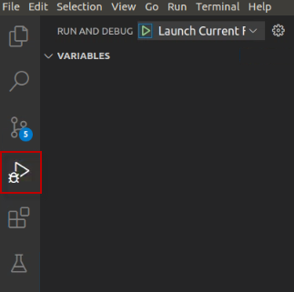
b. Using the launch Drop-down menu in the Debug perspective, set the Launch action to the “Attach” configuration that you created.
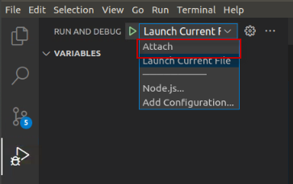
c. The “Attach” configuration is now selected. You are ready to debug.

-
Click on the Start Icon to start the debugger.

The debugger is now attached, and the CALL STACK and BREAKPOINTS are displayed in the Debug perspective, as illustrated below:

-
From the Firefox Browser in the VM, run the /health endpoint to view the health status of the application. The application will stop at the breakpoint in the SystemLivenessCheck.java code.
http://localhost:9080/healthIn VS Code’s Debugger perspective, the application stopped at the breakpoint you set in the SystemLivenessCheck.java, as illustrated below.

-
Now you can use the “step Over”, “Step In” “Step Out”,” Run” or “Disconnect” actions.
a. Click the “Step Over” to execute the existing line of code and step to the next line of code in the application.

-
When you are finished stepping through the debugger and exploring the local variables, click the Disconnect” icon to disconnect the debugger
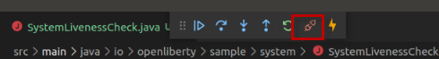
-
Use the Liberty Dev Dashboard to STOP the Liberty Server in dev mode
a. In VS Code, expand the LIBERTY DEV DASHBOARD section
b. Right-mouse click on the guide-getting-started Liberty Server
c. Select Stop from the menu to stop the server
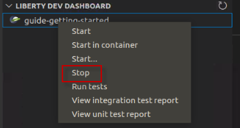
-
Exit the VS Code UI
a. Select File > Exit from the main menu in VS Code to Exit the UI
-
Close all opened Terminal Windows and Browser tabs
Congratulations! You have successfully used the Liberty Dev VS Code extension to start Open Liberty in development mode, make changes to your application and Liberty server configuration while the server is up, run tests and view results, and even debug the application without leaving the editor.
As you explored the fast and efficient inner-loop development experience using the Open Liberty tools and VS Code IDE, your code was automatically compiled and deployed to your running server, making it easy to iterate on your changes.
===== END OF LAB =====